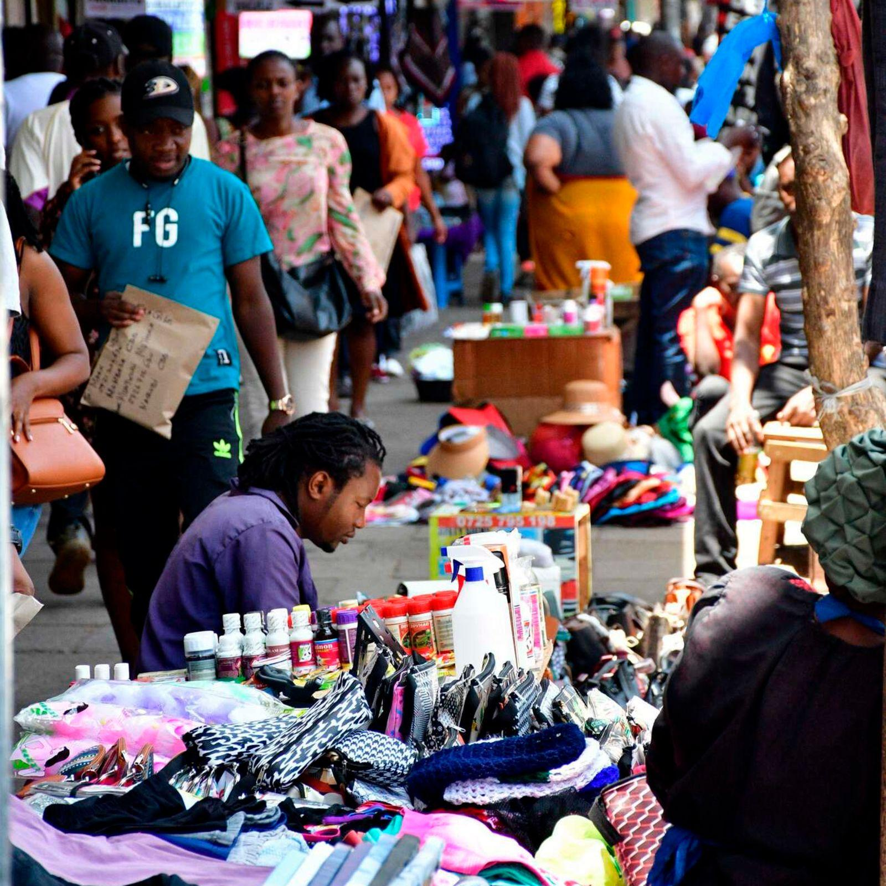

A movement for humanity, connection & purpose
See the person.
beyond their circumstances.
Beyond The Streets brings people, communities and stakeholders together to recognise human potential, amplify lived experience and create pathways to meaningful impact.
HUMAN DIGNITY · SHARED PROGRESS · REAL IMPACT
Who we are
People are more than the labels placed on them.
We believe every person brings a story, a perspective and the potential to contribute. Yet too often, public perception is shaped by circumstance rather than by the whole person.
Beyond The Streets is a platform for connection and practical collaboration. We work alongside people with lived experience and communities to shape responses that are respectful, relevant and rooted in real life.
Explore our approach →
Different journeys.
Shared humanity.
Shared humanity.
What we believe
A person's circumstances are part of their story — never the whole story.
We want communities where people are recognised for their abilities, included in decisions and connected to opportunities to shape their own futures.
OUR AREAS OF FOCUS
Turning shared understanding
Turning shared understanding
into shared action.
We connect stories, community knowledge and practical partnerships. Our work is designed with people, not simply for them.


01
06

Our approach
Listen first.
Build together.
Lasting progress starts with understanding what people say they need, what they already know and what they want to build. We make lived experience central to the conversations and decisions that affect people.
From community dialogues to storytelling and opportunity partnerships, we aim to turn listening into thoughtful, practical next steps.
Community-led insight
Respectful storytelling
Practical partnerships
Learning and accountability
Be part of the change
Different strengths. One shared purpose.
Your perspective matters. Your presence can make a difference. Whether you’re ready to collaborate, support the work or help drive change, there’s a place for you in shaping what comes next.
Get involved ↗